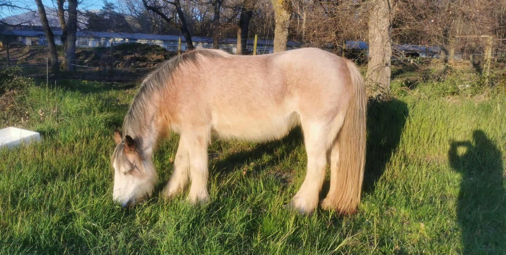

Descendance

Jument · Irish Cob · Élite grade 1 · Débourrée montée
SD Sakura — dont le nom évoque les cerisiers en fleurs — est une jument d'élite, débourrée montée, avec une belle énergie en balade. Fille de SD Flash Harry et de SD Suzie (par Woolly Mammoth), elle est issue de deux des lignées les plus solides de l'Irish Cob.
Ses qualités morphologiques et sa facilité de travail se transmettent directement à sa descendance. Son fils Nashi, issu de Cairnview Archy, en est la preuve : espiègle, harmonieux, proche de l'homme, parfait pour le loisir. Caractère serein, maternité exemplaire — Sakura est au cœur de la sélection Humming Cob.
Nous contacterSD Sakura est fille de SD Flash Harry et de SD Suzie — les deux lignées fondatrices de l'élevage Humming Cob réunies. On note la présence de The Sweeper Mare des deux côtés du pedigree, via SD Jim côté paternel et via Samson of Wales côté maternel, à la 4ème génération — sans impact sur la vigueur de la descendance.